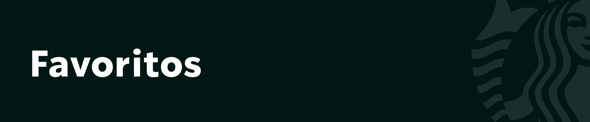

Métricas de producto
- Tasa de recompra desde Favoritos.
- Conversión de producto favorito a compra completada.
- Incremento en frecuencia de compra de usuarios que usan Favoritos.
Feature diseñado para facilitar la recompra de productos frecuentes y guardar personalizaciones, reduciendo fricción en el proceso de compra.

Muchos usuarios repiten bebidas o configuraciones similares en cada compra. Sin una forma rápida de guardar sus productos preferidos, el proceso de recompra exige más pasos, más tiempo y mayor esfuerzo cognitivo.
Acelerar la recompra de productos frecuentes permitiendo que el usuario guarde bebidas y personalizaciones, reduciendo pasos en el flujo de compra y aumentando la frecuencia de pedidos.

Favoritos permite guardar productos y configuraciones personalizadas para reutilizarlas en futuras compras. Desde esta sección, el usuario puede acceder rápidamente a sus bebidas frecuentes, agregarlas al carrito y avanzar al checkout con menos fricción.


Conversión desde favoritos a compra.